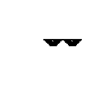

Product designer based in The Hague, interested in growth hacking &
designOps.
Currently designing at
Nord Security.
Previously, for Vermietet.de (ImmoScout24).
Interested in open source & research projects. Feel free to
say hello!
Hover the red avatar (desktop). Eyes keep tracking under the shades.
initializing…
- Fit — which variant sits on the sockets without floating?
- Yaw — does the foreshortening match the three-quarter face?
- Gag — instant on/off feel like kevin.ie, not a drop animation?
- Eyes — tracking still readable under the overlay?